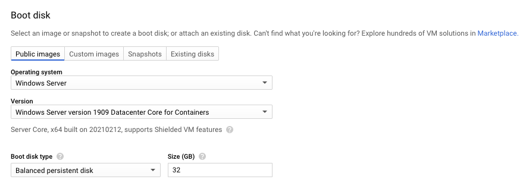

Kubernetes Windows Nodes
Introduction
This post is a walkthrough on using a Windows node to run network policies with agnhost:2.26 mappings in order to understand how suitable the netpol suite is ready for it.
https://github.com/kubernetes/kubernetes/tree/master/test/e2e/network/netpol
Setting up the cluster

Our master needs to be on Linux, so a GCP Vm with COS is being used, following up the quickstart on this node:
https://docs.projectcalico.org/getting-started/kubernetes/quickstart
Start the cluster in the following subnet with Kubeadm:
sudo kubeadm init --pod-network-cidr=192.168.0.0/16
sudo cp -i /etc/kubernetes/admin.conf $HOME/.kube/config
sudo chown $(id -u):$(id -g) $HOME/.kube/config
Install Calico operator and CRDs:
kubectl create -f https://docs.projectcalico.org/manifests/tigera-operator.yaml
kubectl create -f https://docs.projectcalico.org/manifests/custom-resources.yaml
Check if the pods are running:
kubectl get pods -A
calico-system calico-kube-controllers-6797d7cc89-xmvwv 1/1 Running 0 79m
calico-system calico-node-hckk5 1/1 Running 0 79m
calico-system calico-typha-7f598c987d-x2l7m 1/1 Running 0 79m
kube-system coredns-74ff55c5b-pwn6f 1/1 Running 0 103m
kube-system coredns-74ff55c5b-xhv7m 1/1 Running 0 103m
kube-system etcd-hackbox 1/1 Running 0 103m
kube-system kube-apiserver-hackbox 1/1 Running 0 103m
kube-system kube-controller-manager-hackbox 1/1 Running 0 103m
kube-system kube-proxy-nvfj4 1/1 Running 0 103m
kube-system kube-scheduler-hackbox 1/1 Running 0 103m
tigera-operator tigera-operator-549bf46b5c-kw6ng 1/1 Running 0 79m
Bringing up the Windows node

It’s required to have at least:
Windows Server 1909 (AKA 19H2 build 18362.1049 or greater), with Docker service enabled
So we are using the windows-server-1909-dc-core-for-containers-v20210212 machine, connect with RDP:
So you will be able to run ommand as Administrator using powershell. Magically following the instructions on ProjectCalico tutorial will add the node on your cluster:
https://docs.projectcalico.org/getting-started/windows-calico/quickstart
calicoctl ipam configure --strictaffinity=true # this is important
kubectl patch installation default --type=merge -p '{"spec": {"calicoNetwork": {"bgp": "Disabled"}}}'
Copy the config from the cluster to the windows machine (from ~/.kube/config), and run the installation
$ c:\install-calico-windows.ps1 -KubeVersion 1.20.1
C:\CalicoWindows\kubernetes\install-kube-services.ps1
Downloading CNI binaries
[DownloadFile] File c:\k\cni\host-local.exe already exists.
Downloading Windows Kubernetes scripts
[DownloadFile] File c:\k\hns.psm1 already exists.
[DownloadFile] File c:\k\InstallImages.ps1 already exists.
[DownloadFile] File c:\k\Dockerfile already exists.
WARNING: The names of some imported commands from the module 'hns' include unapproved verbs that might make them less
discoverable. To find the commands with unapproved verbs, run the Import-Module command again with the Verbose
parameter. For a list of approved verbs, type Get-Verb.
Downloaded [https://dl.k8s.io/v1.20.4/kubernetes-node-windows-amd64.tar.gz] => [C:\Users\amim_knabben\AppData\Local\Temp\2\tmp7111.tar.gz]
...
* Starting Calico...
This may take several seconds if the vSwitch needs to be created.
Waiting for Calico initialisation to finish...
Waiting for Calico initialisation to finish...StoredLastBootTime , CurrentLastBootTime 20210301012833.499350+000
Check the node is ready
NAME STATUS ROLES AGE VERSION
devbox Ready control-plane,master 23h v1.20.1
windows-1.us-east1-b.c.kflow-294915.internal Ready <none> 21h v1.20.4
** Found some DNS ISSUES, didn’t waste much time on it. **
Trying Calico on EKS
Instead, give another try using EKS as the following guide exemplifies:
https://github.com/tigera-solutions/install-calico-for-windows
A few comments here, default Network Policy does not works as amiFamily: WindowsServer2019FullContainer, check the correct
AMI set below. The simpler method is to go without EKS and eksctl managed hosts:
https://aws.amazon.com/blogs/containers/open-source-calico-for-windows-containers-on-amazon-eks/
This Calico version CNI on v1.7.8 works fine
Just make sure you have the correct architecture binary from:
curl -LO https://dl.k8s.io/release/v1.20.0/bin/windows/amd64/kubectl.exe
Initial netpol on Win
The nodeSelector with windows needs to be explicit in the pod creation:
thePod := pod.KubePod()
thePod.Spec.NodeSelector = map[string]string{
"kubernetes.io/os": "windows",
}Otherwise this the Pod will be on Pending status with:
pod does not have label vpc.amazonaws.com/PrivateIPv4Address
Some other examples on Windows: https://docs.projectcalico.org/getting-started/windows-calico/demo
If you wanna dig deeper in the topic:
TGIK 144 - Exploring the State of K8s on Windows https://www.youtube.com/watch?v=WnXnO97tsNo